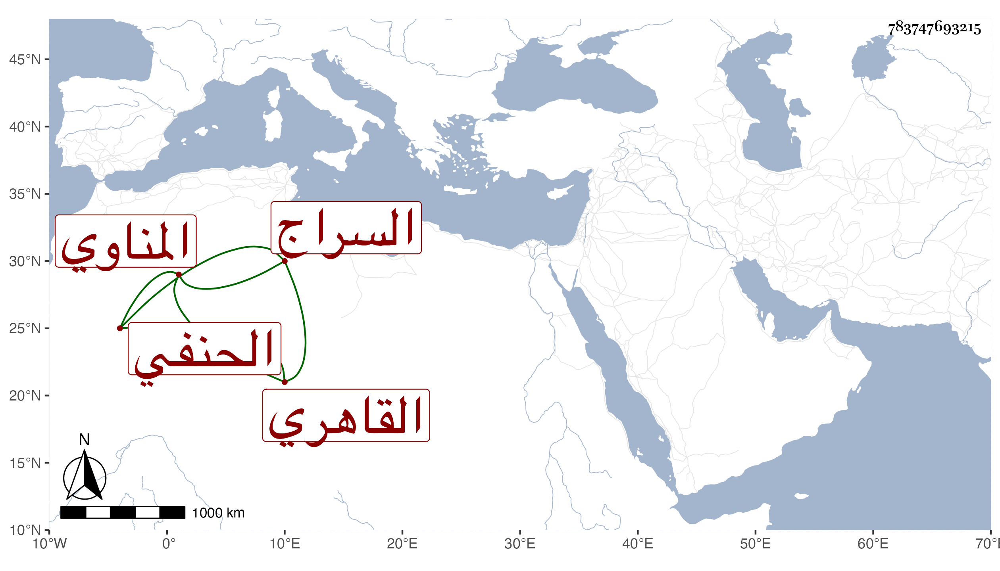

0902Sakhawi.DawLamic.ITO20230111-ara1.EIS1600.783747693215
Biography ID: 783747693215
339
عمر بن علي بن عمر السراج المناوي ثم القاهري الحنفي ويعرف بالمنيتيني . ممن لازم سيف الدين وكان قارئ الكشاف عنده في المنصورية وسمع على أمه وغيرها واشتغل كثيرا وفضل وناب في القضاء وجلس بالقرب من الجانبكية في القربيين ، وتنزل في بعض الجهات وأعطاه البرهان الكركي حين أخذه الأشرفية تدريس خشقدم بالأزهر ، وكان كثير المباحثة والمشي والتساهل ممتهنا لنفسه مزري الهيئة والشكل زائد الغفلة سليم الفطرة بحيث تنسب إليه قضايا . مات في جمادى الأولى سنة ثلاث وتسعين عفا الله عنه .
